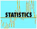
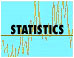
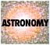
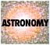

| |
Asteroid densities
The CASt dataset
asteroid_dens.dat
Astronomical background
Asteroids are the billions of rocky bodies in the Asteroid
Belt lying between the orbits of Mars and Jupiter. Spectra and
reflectivity show several types of surfaces. However, the internal
structure of asteroids has been largely unknown. A crucial clue
is provided by the density; for example, an asteroid made of solid
water ice will have density 1 g/cm3, solid rock will have densities
around 3-5 g/cm3, and porous structures will have lower density.
To calculate asteroid densities one needs measurements of the radius
(obtainable from astronomical information) and the mass (which cannot
be obtained from their orbits or spectra). Masses can only be
measured by examining the orbit of some smaller body, a man-made probe
or a natural companion asteroid.
To date, masses and radii -- and thus densities -- have been
measured for only a handful of asteroids. Each density has an
estimated measurement error depending on the accuracy of the orbital
information of the companion and other problems. Data for 22
along with detailed discussion of asteroid composition and porosity are
presented by Britt et al. (2002, online at
http://homepage.mac.com/brother_guy/.Public/Asteroid%20Densities.pdf).
Five additional measurements were recently reported (Behrend et al.
2006; Marchis et al. 2006). We have collected these into the
dataset here.
Dataset
The dataset has 27 rows and the following columns:
- Asteroid name
- Density in units of g/cm3
- Uncertainty of the density (s.d.)
Statistical exercises
- Establish the distribution of asteroid densities, with and
without weighting by the measurement errors. (Note that the
sample is not random so it will not accurately reflect the true
population distribution.) Parametric modelling (mean, variance,
kurtosis) and nonparametric density estimation. Look for
bimodality (e.g. solid rock vs. ice vs. porous interior).
|
 
 
